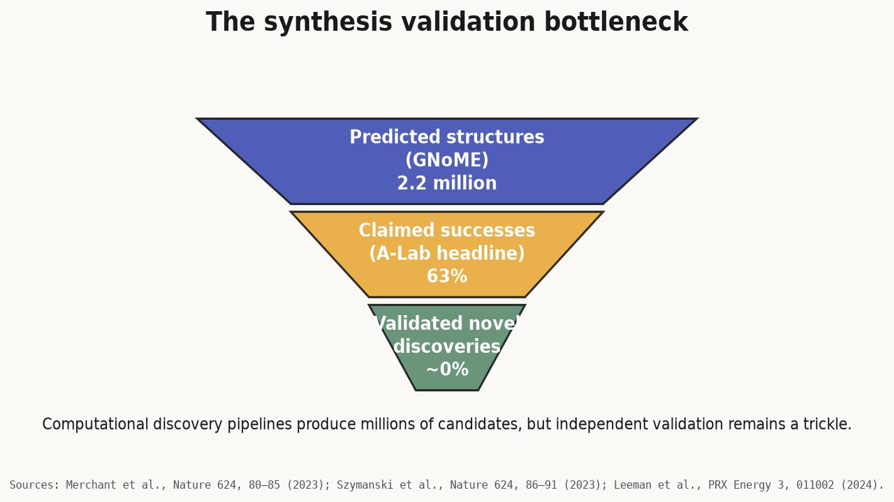
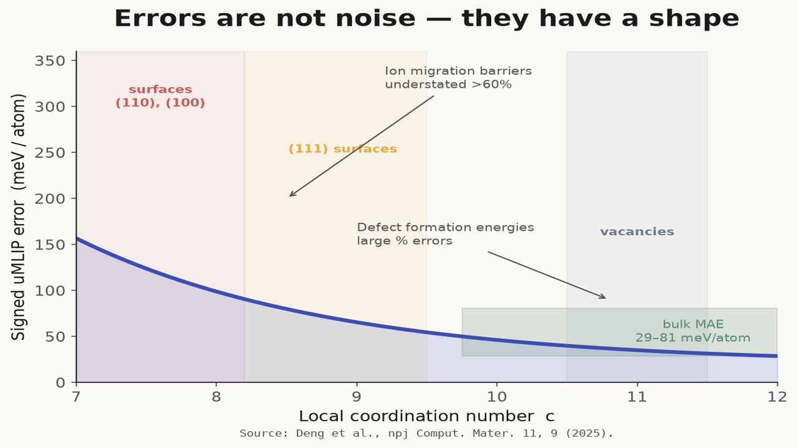
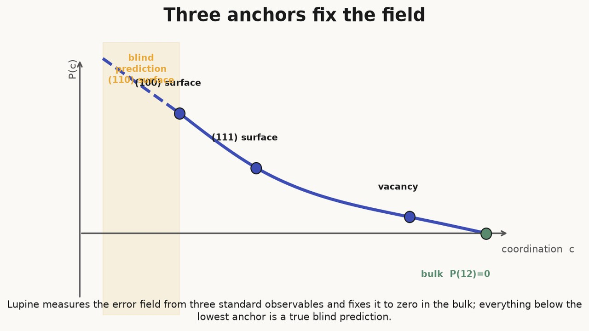
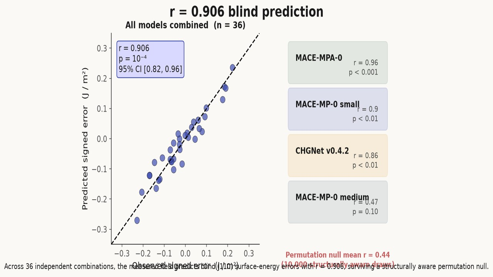
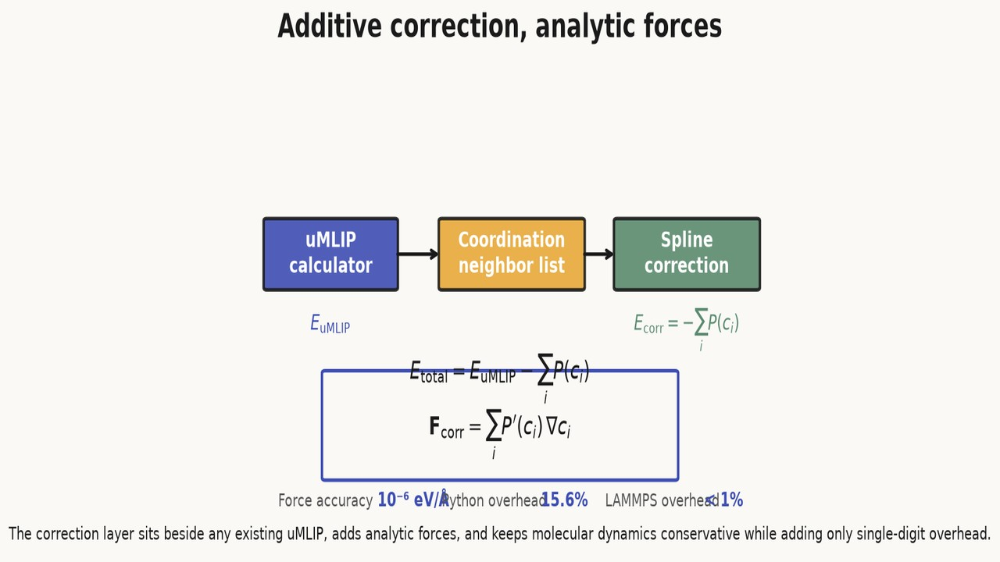
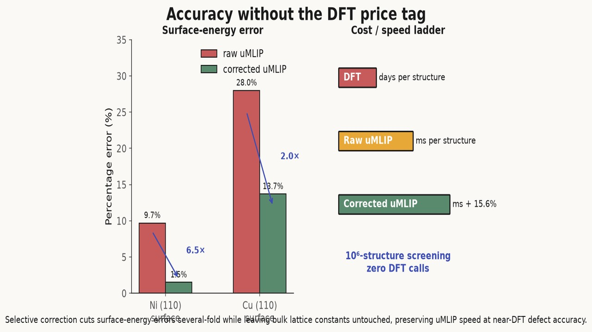
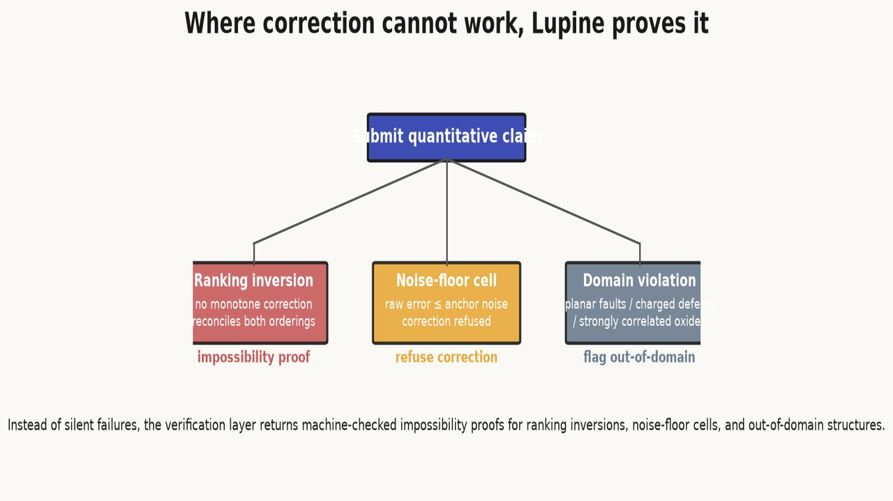
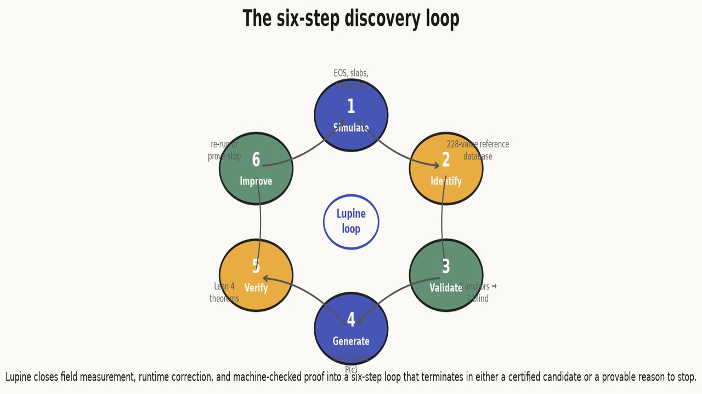
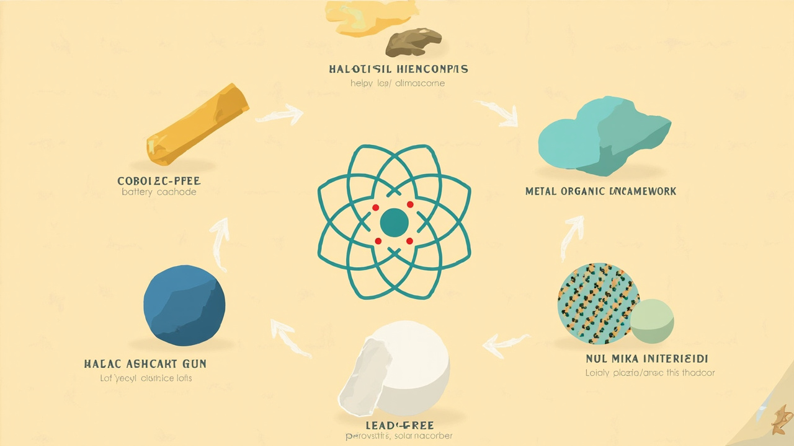
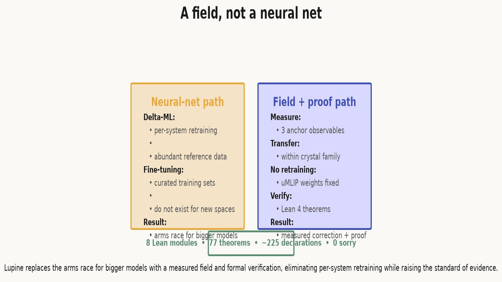

A Field, Not a Neural Net


Predicted materials vastly outrun verified discoveries: GNoME’s 2.2 million crystals produced only 736 confirmed syntheses, while A-Lab’s headline success rate collapsed once duplicates were removed. Sources: Merchant et al., Nature 624, 80–85 (2023); Szymanski et al., Nature 624, 86–91 (2023); Leeman et al., PRX Energy 3, 011002 (2024).The dominant narrative in computational materials science is that bigger models trained on more data will close the gap between prediction and synthesis. The evidence points elsewhere. Google DeepMind’s GNoME predicted 2.2 million crystals; only 736 had been independently synthesized by late 2023, a 0.2% validation rate[1]. The A-Lab autonomous synthesis facility reported a 63% success rate, but subsequent critique showed that two-thirds of its “novel" targets were already-known disordered phases, collapsing the true discovery rate toward zero[2]. The problem is not that the models are too small. It is that their errors have a shape — a systematic, low-dimensional geometry in the space of local atomic environments — and the field has been treating that shape as noise.
Lupine Science starts from the opposite premise. The wrongness of universal machine-learning interatomic potentials (uMLIPs) is not random. It is a smooth function of coordination number, measurable from a handful of anchor observables, and correctable at runtime with analytic forces. This article explains the environment error field: what it is, how it is measured rather than learned, and why the distinction matters for climate-critical materials discovery.
The Field Hypothesis
A uMLIP such as CHGNet, MACE-MP-0, or M3GNet evaluates atomic energies in milliseconds, enabling screening campaigns that would be economically impossible with density functional theory (DFT). On bulk formation energies the best models reach mean absolute errors of 29–81 meV/atom, close to the intrinsic accuracy of the DFT functionals on which they were trained[3]. But functional materials do not operate as bulk crystals. Ion conduction, catalytic turnover, and hydrolytic stability all depend on under-coordinated environments — vacancies, surfaces, and transition states — where uMLIPs fail most severely: defect formation energies carry large percentage errors, and ion migration barriers are underestimated by more than 60%[4].
The error is not an inescapable property of machine learning. It is a predictable consequence of training data. Databases such as the Materials Project trajectories, OMat24, and Alexandria are dominated by near-equilibrium, closed-shell bulk structures in which every atom sits close to its high-symmetry coordination. A smooth regressor trained on that distribution interpolates accurately at the bulk coordination but extrapolates with correlated bias into under-coordinated regimes: surfaces, vacancies, transition states, and grain boundaries[5].

Where atoms are under-coordinated — surfaces, vacancies, and transition states — universal potentials drift predictably away from reference energies, not randomly. Source: Deng et al., npj Comput. Mater. 11, 9 (2025).Lupine formalizes this observation as the environment error field. For a given configuration, the total systematic energy error of a uMLIP is approximated by a sum over atoms of a per-atom error that depends only on the atom’s local coordination number $c$:
$$E^{\text{model}} - E^{\text{ref}} \approx \sum_i P(c_i).$$
For a perfect face-centered-cubic (fcc) bulk atom, $c = 12$, and the field is defined to be zero — consistent with the empirical fact that uMLIPs are already accurate in the bulk. The field $P©$ is therefore not a universal constant fitted across all materials; it is a material-specific and model-specific measured quantity, anchored to the physics of bond counting.
Measured, Not Learned
The critical difference between the Lupine field and previous correction strategies is that the field is measured, not learned. Delta-ML trains a separate model to learn the discrepancy between a fast baseline and an accurate target; it requires per-system retraining and abundant reference data[6]. Fine-tuning updates uMLIP weights on target-system data; it works when curated training sets exist, which they do not for unexplored composition spaces[7]. Both approaches treat the error as an arbitrary function to be discovered from data.
Lupine imposes the functional form. A cubic spline through three standard anchor observables — the (100) surface probing $c=8$, the (111) surface probing $c=9$, and the vacancy formation energy probing $c=11$ — is fixed by the boundary condition $P(12) = 0$. Linear continuation below $c=8$ predicts the error at $c=7$, which corresponds to the (110) surface energy. That observable is never fitted during field construction; it is predicted blind.

Lupine measures the error field from three standard observables and fixes it to zero in the bulk; everything below the lowest anchor is a true blind prediction.Each anchor samples a different coordination deficit relative to the bulk reference. Because the same coordination numbers recur across materials that share a crystal structure family, the spline transfers across properties within that family — surface energies, vacancy formation energies, and migration barriers — without additional DFT oracle calls. The correction is measured in the sense that geometry dictates the functional form and only the three knot values are empirical.
The r = 0.906 Result
The empirical test is strict blind prediction. Across 36 independent (model, material) combinations, the field predicts the signed error of the never-fitted (110) surface energy with Pearson correlation $r = 0.906$ ($p = 10^{-4}$, 95% confidence interval [0.82, 0.96]), using zero adjustable parameters.

Across 36 independent combinations, the measured field predicts blind (110) surface-energy errors with r = 0.906, surviving a structurally aware permutation null.The per-model breakdown is informative. CHGNet v0.4.2 achieves $r = 0.86$ ($p < 0.01$). MACE-MP-0 small achieves $r = 0.90$ ($p < 0.01$). MACE-MPA-0, trained on the larger OMat24 non-equilibrium dataset, achieves $r = 0.96$ ($p < 0.001$). MACE-MP-0 medium is the one non-significant case at $r = 0.47$ ($p = 0.10$). That exception matters: it bounds the field’s domain rather than refuting it. The OMat24-trained model performs best because its training distribution already samples more under-coordinated configurations, supporting the hypothesis that the field captures a real training-data bias rather than an accidental correlation.
An honest null is essential. Because (100), (111), and (110) facets of the same material are structurally correlated, a naïve permutation null would be too permissive. The reported null distribution, with mean $r = 0.44$, is generated by permuting within models across 10,000 draws, preserving the structural correlation. The measured $r = 0.906$ survives this conservative test.
At integer-scaled precision of $10^{-4}$ J/m$^2$, 26 of 36 cells improve strictly over the predict-zero baseline, with median residual dropping from 0.104 to 0.066 J/m$^2$. The number is 26, not 27 — a distinction that becomes important when the same pipeline is subjected to machine-checked proof.
Runtime Correction
The field inverts naturally into an additive correction energy:
$$E_{\text{corr}} = -\sum_i P(c_i).$$
Because the field is negative where the model underpredicts — the typical case for defects and surfaces — the correction raises under-coordinated configurations toward the reference energy. Forces follow analytically from the chain rule, $F_{\text{corr}} = -\nabla E_{\text{corr}} = \sum_i P’(c_i) \nabla c_i$, so molecular dynamics conserves energy and structure relaxations follow proper gradients. Force accuracy was verified against numerical differentiation to $10^{-6}$ eV/Å on rattled slabs.

The correction layer sits beside any existing uMLIP, adds analytic forces, and keeps molecular dynamics conservative while adding only single-digit overhead.The correction layer deploys beside any existing uMLIP calculator without retraining its weights. Coordination computation is a local neighbor-list operation, so the overhead is small: 15.6% on CHGNet steps in the current Python implementation. A compiled pair-style overlay in LAMMPS would reduce that below 1%, because coordination reduces to a few floating-point operations per neighbor pair. Even with the present overhead, a corrected uMLIP remains many orders of magnitude faster than DFT.
Validation confirms selective correction. The fitted observables recover exactly in closure tests, demonstrating that the bond-counting field survives real structural relaxation. The blind (110) facet improves 6.5× for Ni (9.7% error to 1.5%) and 2.0× for Cu (28.0% to 13.7%). Bulk lattice constants are unchanged, because the correction vanishes identically at $c = 12$.

Selective correction cuts surface-energy errors several-fold while leaving bulk lattice constants untouched, preserving uMLIP speed at near-DFT defect accuracy.Machine-Checked Proof
Statistical validation has a well-known limitation: it cannot catch bugs in the analysis code, and it applies only to the samples tested. Lupine adds a formal verification layer. Every quantitative claim — ordering relations, correction bounds, and impossibility results — is encoded as a Lean 4 theorem over integer-scaled data carrying SHA-256 provenance of the source files. The formalization currently comprises 8 modules, 77 build-locked theorems, approximately 225 declarations, and zero sorry proofs.
The theorems fall into three categories. Ordering claims are inequality chains verified by the Lean kernel at fixed precision, not statistical summaries. Isotonic correction theorems implement the log-affine correction as a Lean function whose outputs the kernel checks against expected ordering properties. Impossibility theorems prove, with concrete counterexample witnesses, where no monotone correction can reconcile a model’s ordering with the reference ordering.
The kernel-rejected claim episode illustrates why this matters. A statistical filter initially accepted that 27 of 36 cells improved strictly. When submitted to Lean, the decide tactic refused to prove $813 < 813$; at $10^{-4}$ J/m$^2$ integer precision, one cell’s improvement margin was exactly zero. The corrected count is 26 of 36. A p-value does not know about integer rounding; the proof kernel does. In a pipeline where each false positive can cost weeks of synthesis effort, the distinction between statistical confidence and mechanical certainty is economically decisive.
Where Correction Fails, Lupine Proves Impossibility
A verification layer is only as useful as its boundary conditions. Lupine does not claim the field works everywhere; it proves where it cannot work. Three boundary conditions are formally established.

Instead of silent failures, the verification layer returns machine-checked impossibility proofs for ranking inversions, noise-floor cells, and out-of-domain structures.First, ranking inversions. When a model’s ordering disagrees with the reference ordering, a monotonicity impossibility lemma proves that no monotone correction can map both to their references simultaneously. The experimentalist receives not a vague uncertainty estimate but a machine-checked statement that the candidate cannot be rescued within the method.
Second, already-converged cells. Where the raw uMLIP error sits at the noise floor of the anchor observables — for instance, MACE-MPA-0 on certain surfaces — correction adds no value and is refused. The proof flags the redundancy before computational effort is wasted.
Third, outside the field’s domain. Environments that require second-shell structure or explicit electronic-structure treatment — planar faults, charged defects, strongly correlated oxides — are outside the first-shell coordination approximation. Lupine proves the domain violation and reports the witness.
These impossibility proofs are not admissions of weakness. They are the feature that prevents the A-Lab pattern: systematic false positives propagating through an autonomous pipeline because no layer knew how to say no.
The Six-Step Loop
The field measurement, runtime correction, and formal verification layers close into a six-step discovery cycle:
- Simulate — run a uMLIP through the standard property pipeline: equation of state, surface slabs, vacancy supercells.
- Identify — compare predictions to the 228-value provenance-annotated reference database.
- Validate — check whether errors follow the environment error field; use the three anchors to predict a fourth blind observable.
- Generate — construct the cubic spline $P©$ and deploy it as an additive correction with analytic forces.
- Verify — submit every quantitative claim to the Lean 4 kernel; ordering claims become inequalities, correction bounds become isotonic theorems, failures become impossibility lemmas.
- Improve — run the corrected calculator through the full pipeline. If correction succeeds, report corrected values with theorem certificates. If it fails, the impossibility proof tells the experimentalist why.

Lupine closes field measurement, runtime correction, and machine-checked proof into a six-step loop that terminates in either a certified candidate or a provable reason to stop.Against DFT, the loop offers comparable defect-energy accuracy at many orders of magnitude higher speed. Against raw uMLIPs, it replaces uncontrolled systematic bias with a bounded, measured correction. Against delta-ML and fine-tuning, it eliminates per-system retraining because the spline transfers within a crystal-structure family. The practical consequence: a $10^6$-structure screening campaign needs no DFT calls, yet every candidate carries a provable accuracy boundary.
From Geometry to Climate Targets
The field is not an abstract mathematical device. It maps directly onto the defects, surfaces, and transition states that determine climate-critical material performance.

The defects that break climate-critical materials — ion hops, surface catalytic sites, hydrolysis nodes — are exactly the under-coordinated environments the field measures.In cobalt-free lithium-manganese-rich cathodes, voltage fade is transition-metal migration from octahedral to tetrahedral sites — a hop whose barrier is underestimated when the transition state is under-coordinated. In earth-abundant halide solid electrolytes, ionic conductivity depends exponentially on the Li$^+$ migration barrier; a 60% barrier error changes predicted conductivity by roughly three orders of magnitude. In MOFs for direct air capture, humidity stability is governed by metal-linker hydrolysis at under-coordinated nodes. In electrochemical ammonia catalysts, N$\equiv$N cleavage occurs at surface defect sites. In lead-free perovskite absorbers, Sn$^{2+}$ oxidation and vacancy formation set the stability ceiling.
Every one of these properties is a coordination-dependent defect property. Every one is therefore within the domain where a measured error field can correct the prediction, or where an impossibility proof can flag the candidate as unsupported. The next article in this series turns from the method to the targets: five material classes where correction plus verification could unlock 5–12 GtCO$_2$/year.

Lupine replaces the arms race for bigger models with a measured field and formal verification, eliminating per-system retraining while raising the standard of evidence.Footnotes
A. Merchant et al., “Scaling deep learning for materials discovery,” Nature 624, 80–85 (2023). https://doi.org/10.1038/s41586-023-06735-9 ↩︎
N. J. Szymanski et al., “An autonomous laboratory for the accelerated synthesis of novel materials,” Nature 624, 86–91 (2023); J. Leeman et al., “Challenges in High-Throughput Inorganic Materials Prediction and Autonomous Synthesis,” PRX Energy 3, 011002 (2024). https://doi.org/10.1038/s41586-023-06734-7; https://doi.org/10.1103/PRXEnergy.3.011002 ↩︎
B. Deng et al., “Systematic softening in universal machine learning interatomic potentials,” npj Computational Materials 11, 9 (2025). https://doi.org/10.1038/s41524-024-01500-6 ↩︎
B. Deng et al., “Systematic softening in universal machine learning interatomic potentials,” npj Computational Materials 11, 9 (2025). ↩︎
B. Deng et al., “Systematic softening in universal machine learning interatomic potentials,” npj Computational Materials 11, 9 (2025); see discussion of training-data composition and bias toward near-equilibrium bulk structures. ↩︎
F. Ramprasad et al., “Machine learning in materials informatics: recent applications and prospects,” npj Computational Materials 3, 54 (2017). https://doi.org/10.1038/s41524-017-0057-0 ↩︎
B. Deng et al., “CHGNet: pretrained universal neural network potential for charge-informed atomistic modelling,” Nature Machine Intelligence 5, 1031–1041 (2023). https://doi.org/10.1038/s42256-023-00716-3 ↩︎